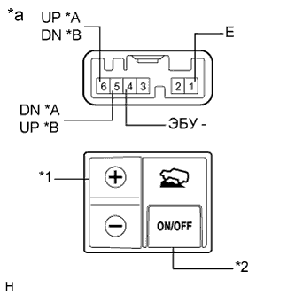

ПЕРЕКЛЮЧАТЕЛЬ CRAWL > ПРОВЕРКА |
| 1. ПРОВЕРЬТЕ ПЕРЕКЛЮЧАТЕЛЬ CRAWL |
|  |
Измерьте сопротивление в соответствии со значениями, приведенными в таблице ниже.
| Контакты для подключения диагностического прибора | Положение переключателя | Заданные условия |
| 6 (UP) - 1 (E) | Переключатель "+" нажат | Менее 1 Ом |
| Переключатель "+" не нажат | 10 кОм или более | |
| 5 (DN) - 1 (E) | Переключатель "-" нажат | Менее 1 Ом |
| Переключатель "-" не нажат | 10 кОм или более | |
| 4 (ECU) - 1 (E) | ON (ВКЛ) / OFF (ВЫКЛ): Нажат | Менее 1 Ом |
| ON (ВКЛ) / OFF (ВЫКЛ): Не нажат | 10 кОм или более |
| Контакты для подключения диагностического прибора | Положение переключателя | Заданные условия |
| 5 (UP) - 1 (E) | Переключатель "+" нажат | Менее 1 Ом |
| Переключатель "+" не нажат | 10 кОм или более | |
| 6 (DN) - 1 (E) | Переключатель "-" нажат | Менее 1 Ом |
| Переключатель "-" не нажат | 10 кОм или более | |
| 4 (ECU) - 1 (E) | ON (ВКЛ) / OFF (ВЫКЛ): Нажат | Менее 1 Ом |
| ON (ВКЛ) / OFF (ВЫКЛ): Не нажат | 10 кОм или более |
| *A | Для моделей с левосторонним рулевым управлением |
| *B | Для моделей с правосторонним рулевым управлением |
| *1 | Переключатель выбора скорости |
| *2 | Выключатель ON/OFF (ВКЛ/ВЫКЛ) |
| *a | Устройство с неподсоединенным жгутом проводов (переключатель Crawl) |